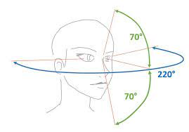

Séance 7
Notre 1 ère Carte Mentale !
Le Mind Mapping ou comment réenchanter l' apprentissage de nos cours...
INTRODUCTION
Ceci est ma septième Séance.
Cette séance sera un prélude à la Carte Mentale ce qui la rend FONDAMENTALE pour la suite ! En effet, j'ai longtemps été en ardent opposant à la Carte Mentale jusqu'à ce quelqu'un me montre tous les potentialités de cet outil ! Donc, si vous voulez éviter de tomber dans les mêmes pièges que moi, il convient de bien suivre cette séance et de bien faire les exercices préliminaires.
Qu'est-ce que n'est pas une Carte Mentale ? :
- une façon ORIGINALE et BIZARRE d'organiser de l'information.
- un dessin d'art.
- une technique qui réclame de savoir dessiner.
- un fouillis de branches complètement désorganisées.
Quels sont les objectifs de la Carte Mentale ? :
- Augmenter la mémorisation d'un cours
- Augmenter l'intérêt pour un cours.
- Favoriser l'apprentissage (compréhension + mémorisation) d'un cours.
- Retrouver l'information présente dans un cours sans avoir à réétudier ce cours (même 6 mois après).
C'est donc bien un outil (et ça ne doit à mon avis que être utilisé pour répondre à un besoin) pour mieux assimiler un cours ou mieux retrouver l'information d'un cours difficile à assimiler.
Qu'est-ce que la Carte Mentale ? D'abord, c'est une façon différente d'organiser l'information dans l'espace. Là où la prise de notes classique (on l'appelle la "prise de note linéaire") organise l'information dans une seule direction (du haut de la feuille jusqu'en bas de la feuille), la Carte Mentale organise l'information dans tout l'espace (de votre feuille). Cela a plusieurs avantages : d'abord, vous pouvez voir d'un coup d'oeil TOUTE l'information. Ensuite, vous n'êtes pas piégé par la forme : vous pouvez rajouter une information même si le "conférencier" fait un retour sur le sujet traité au tout début de son allocution. Ainsi, vous pouvez obtenir une prise de notes organisée à partir d'un cours totalement désorganisé !!!
D'autre part, la Carte Mentale tire parti du fait que notre cerveau est très bon dans la reconnaissance des images. Cela favorisera à la fois le traitement de l'information par le lecteur de la Carte Mentale mais aussi la mémorisation de la Carte Mentale.
Enfin, c'est une utilisation harmonieuse de notre cerveau. En effet, le cerveau percoit et traite la réalité de deux façons : l'hémisphere gauche (improprement appelé "cerveau gauche") est verbal et s'occupe du Langage, de la Logique et l'hémisphere droit (improprement appelé "cerveau droit") est visuel et perceptif. Or, dans une Carte Mentale, on utilise à la fois le "cerveau gauche" à l'aide des MOTS et le "cerveau droit" plus visuel, plus artiste à l'aide des PICTOGRAMMES. De plus, il y a un lien prouvé entre notre main et notre cerveau et je peux vous assurer que lorsque l'on fait une Carte Mentale, il se passe quelque chose de très particulier dans notre cerveau (c'est une sensation très particulière !).
Je tiens à remercier ici très solennellement Cyril Maitre, une référence incontestée (et incontestable) qui m'a enseigné la technique de la Carte Mentale et m'a ouvert les yeux (et le cerveau) sur l'intérêt des Cartes Mentales manuscrites. Vous pouvez consulter son site si vous désirez plus de renseignements : cyril-maitre.com. Je lui dois quasiment tout ce que je sais sur la Carte Mentale. Qu'il en soit ici pleinement remercié et je lui envoie toutes mes amitiés.
LA CARTE MENTALE A CERTAINES RÊGLES À RESPECTER POUR ÊTRE EFFICACE !!!
Je le répète, si vous ne voulez pas passer à côté de ce formidable outil, il faut bien comprendre les rêgles pour la construire. Ces rêgles ne sont pas visibles pour un non-initié ! Donc, je me permettrai de dire que je vois souvent des cartes mentales qui ne sont pas des cartes mentales (parce qu'elles ne respectent pas les rêgles de construction) !!!
Pour bien comprendre l'enjeu de ces rêgles, je vais emprunter une métaphore que l'on doit à Idriss Aberkane : imaginez une bouteille d'eau fermée par un bouchon. Essayez de l'ouvrir en utilisant UNIQUEMENT UN SEUL DE VOTRE PETIT DOIGT (l'auriculaire). Peut-être y arriverez-vous mais la tâche risque d'être très fastidieuse et très longue (parce que cette méthode n'est pas efficace). Par contre, lorsque vous utilisez vos deux mains, la tâche est facile et rapide ! La Carte mentale permet d'utiliser tous les "doigts" de votre cerveau.
Notre cerveau a des articulations avec des mouvements qu'il peut faire ou ne pas faire. Il a des limites qu'il faut connaître (par exemple, 7 éléments plus ou moins 2 en mémoire de travail). Mais on peut dépasser ses limites : tout comme on peut saisir des objets bien plus gros que notre main s'ils ont une poignée, il existe des "poignées" cérébrales qui permettent de manier des idées qui sont beaucoup trop lourdes pour nous sans ces poignées.
La carte mentale est un ensemble de poignées pour notre cerveau.
LE CADRE NOUS IMPOSE SES RÈGLES SANS QU'ON S'EN RENDE COMPTE
Nptre cerveau a tendance à mettre un cadre autour de tout ce qu'il observe ou pense, en permanence ! Ce cadre peut être utile pour nous guider dans la tâche à accomplir mais ce cadre peut aussi s'avérer limitant !
Pour vous montrer cela, nous allons nous livrer à un petit jeu : le test dit des 9 cercles. Comme vous pouvez le voir sur l'image du dessous, vous avez 3 lignes qui comportent 3 cercles chacune. La consigne est de rejoindre les 9 cercles avec un stylo avec 5 traits qui respecteront les règles suivantes :
- des lignes droites (pas de courbes).
- ça ne peut pas passer 2 fois par le même cercle.
- Vous n'avez pas le droit de lever votre stylo.
Voici la solution :
Maintenant, je vais vous demander de rejoindre les 9 cercles avec seulement 4 traits (tout en respectant les mêmes rêgles que précédemment). Après avoir cherché vraiment la solution, vous pouvez la consulter ici :
Vous n'avez pas trouvé la solution parce qu'elle se trouvait en dehors du cadre que votre cerveau a mis autour des 9 cercles :
Notre cerveau a rajouté un cadre qui n'existait pas mais l'alignement des 9 cercles suggère ce cadre à notre cerveau sans que l'on s'en rende compte.
Un dernier test pour illustrer mon propos : cette fois, vous devez le faire avec seulement 3 traits !!! Je vous laisse chercher : soyez honnête si c'est la première fois que vous faîtes ce test ! Ensuite seulement, regardez la solution :
Eh oui ! Cela fonctionne avec seulement 3 traits...et vous vous êtes peut-être dit que cela ne pouvait pas fonctionner ! Alors, qu'est-ce qui vous a bloqué cette fois-ci ? Certainement que vous n'êtes pas assez sorti du cadre (même si vous aviez été prévenu !). Mais aussi certainement que vous aviez rajouté des consignes qui n'existaient pas comme : "il faut passer par les centres des cercles", "il faut toujours passer par le centre du cercle" etc...Bref, vous avez mis des limites !
Ce petit exercice devrait vous convaincre que le cadre a tendance à nous imposer des limites qui peut nous empêcher de trouver la solution ! Donc, il faut ce méfier des cadres qui seraient trop limitants !
LA FORME N'EST JAMAIS NEUTRE
Ici, voici 2 formes très différentes. Une de ces 2 formes se nomme "CHOLAMOL" et l'autre se nomme "TICATICATIC". À votre avis, lesquelles ?
COMMENT SORTIR DU CADRE AVEC LE MIND MAPPING ?
Pour prévenir empêcher le cadre d'être limitant, nous allons faire deux choses pour ne pas être contraint sans même nous en rendre compte :
- Nous prendrons toujours une feuille blanche : pas de feuilles avec des lignes ! Les lignes sont certes pratiques dans le cadre scolaire ou académique (elles permettent d'écrire droit facilement...) mais elles ont tendance à nous limiter dans l'espace.
- On commencera par le centre : on veut la position la plus neutre possible (rappelez-vous : le cadre nous impose ses règles sans que l'on s'en rende compte...). Ça a un autre avantage : cela permettra une meilleure gestion de la place et une bien meilleure souplesse de prise de notes que les notes linéaires.
ORIENTATION DE LA FEUILLE
Encore un petit jeu : prenez vos deux doigts comme ceci. Puis, tout en regardant l'espace entre vos 2 doigts, écartez progressivement vos 2 doigts verticalement. Continuez à écarter vos doigts et arrêtez-vous lorsque vous ne voyez plus vos doigts dans votre champ de vision.
Maintenant, faîtes de même mais horizontalement : mettez vos 2 doigts verticalement devant vos yeux puis écartez-les progressivement tout en regadant toujours l'espace entre vos doigts : arrêtez-vous lorsque vous ne voyez plus vos doigts dans votre champ de vision. ...Vous constaterez que la distance horizontale est beaucoup plus grande
Vous constaterez donc que votre champ de vision est beaucoup plus large que haut. Pour être plus exacte, voici les différences :
Comme le Mind Mapping est un outil de neuroergonomie qui utilise nos aptitudes visuelles, nous placerons toujours notre feuille en mode paysage (horizontale) ! Cela nous permettra de pouvoir voir l'ensemble de la Carte Mentale en un coup d'oeil puisque qu'elle est adaptée à notre champ de vision.
Exercice 1
Je vais vous demander de faire un portrait de votre voisin(e) sur 5 thèmes : les MÉTIERS, les SPORTS, les VOYAGES, l'ALIMENTATION, l'HABITATION. Pour cela, je vais vous fixer quelques règles très simples :
- On écrit en majuscules.
- Un seul mot (ou un mot composé éventuellement) : pas de phrases !
- On écrit les mots au-dessus des branches (pour une question de lisibilité) et pas à côté (pour une question de gestion de place disponible).
- Les branches doivent être de la taille des mots (pour une question de gestion de place disponible).
- Les branches ne peuvent pas être verticales (on doit pouvoir lire sans tourner la feuille).

Voici un exemple point de départ avec ma voisine qui s'appelle Cécile (une fois que vous avez fait l'essai vous-même, vous pouvez consulter ma version en dépliant le bandeau rouge):
Exercice 2
Cette fois, vous allez faire la même chose mais avec des dessins. Plus exactement, vous allez prendre votre première feuille et vous cherchez à traduire les mots par des dessins même si vous ne savez pas dessiner.
CONTACT

Si vous avez des questions ou des commentaires, n'hésitez pas à m'envoyer un email directement sur l'ENT du Collège.